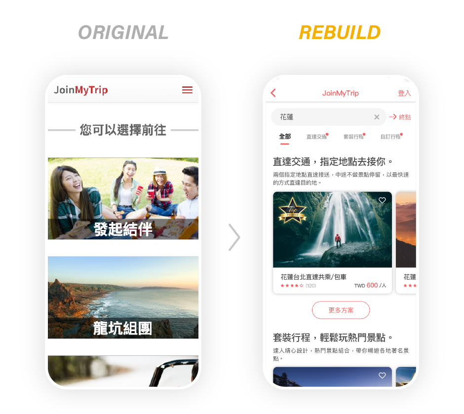

Project Vision
旅遊社交平台 Mobile UI/UX 改版
JoinMyTrip 是一個旅遊 Web App，主要功能為：包車、套裝行程、自訂行程，未來目標發展以地陪為主打特點的微旅行媒合平台，因此進行 UI/UX Redesign，針對介面改版進行小規模易用性測試。
Challange
1) 消除初次進入平台時的使用障礙
2) 為熟悉和不熟悉的使用者設計一個易懂好用的介面
3) 創建簡約的 UI，同時保持產品為重點
4) 提供無縫和線性的購買體驗
Project
旅遊社交平台 Mobile UI/UX 改版
Role
Visuals, Interactions, Iterations
Duration
Dec 2018 - Nov 2019, May 2020
Kickoff
首先，我先問自己幾個初始問題。誰是我們的主要使用者？他們有什麼樣的目標？為什麼要使用我們的服務？改版目的為何？
與 PM 對焦過往經驗和客服回饋，已運行 5 年以上，客群以東南亞華人為主，包含：中國大陸、馬來西亞、港澳、新加坡等華人。優勢在於，給予最大方便性與人情味的旅遊體驗，從 Wechat 內的服務轉而由 JoinMyTrip 提供完整線性的預定體驗。
